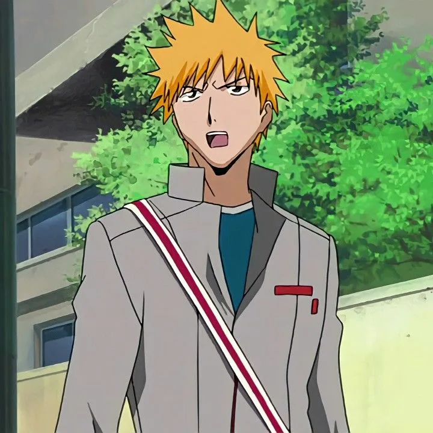
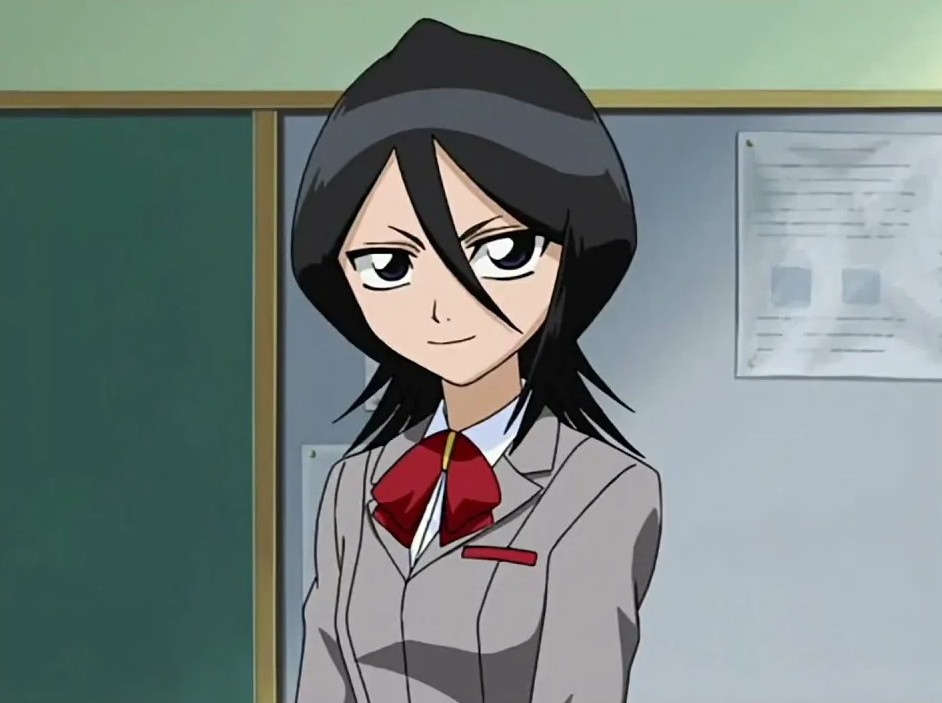
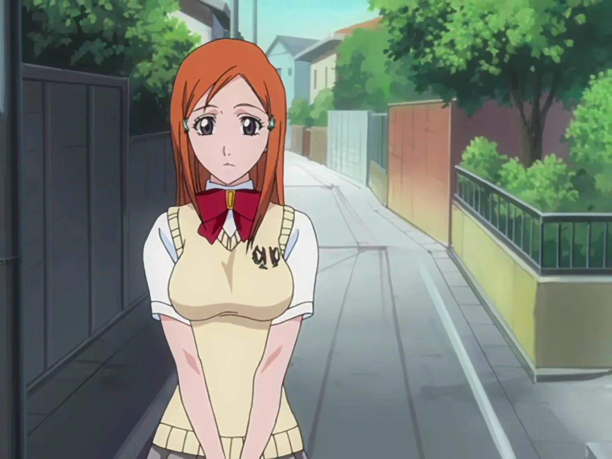
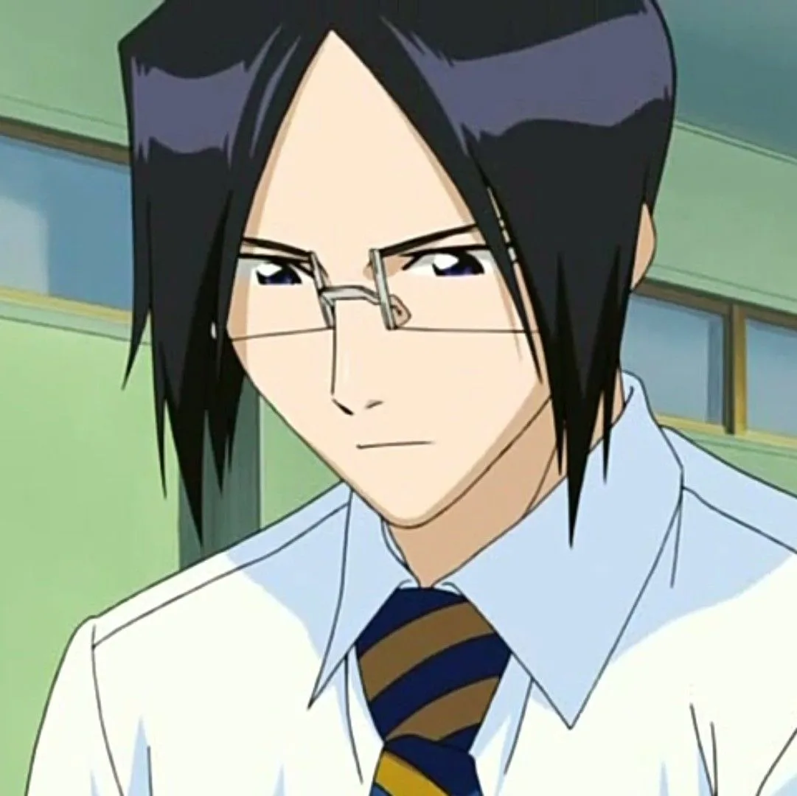
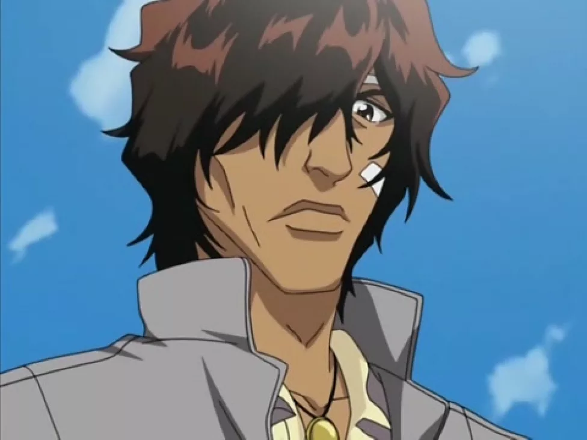

Ичиго Куросаки
Ичиго Куросаки — главный герой аниме, который с детства обладает сверхъестественной способностью видеть призраков. Тем не менее, он не склонен к мистицизму и, хотя читает гороскопы, утверждает, что не верит им. Однажды на его близких нападает злой дух, «пустой», но появляется девушка по имени Рукия Кучики, которая вмешивается в сражение и спасает семью Куросаки. Во время битвы она получает серьёзное ранение и становится перед выбором: погибнуть или передать Ичиго часть своих сверхъестественных сил, чтобы он мог биться вместо неё. Так Ичиго знакомится с миром синигами — «проводников душ», воинов, которые защищают людей, сражаясь со злыми духами пустыми, и помогают добрым душам уйти в мир иной.
Рукия Кучики
Рукия Кучики — девушка-проводник душ, которая была отправлена патрулировать Каракуру и защищать жителей от пустых, а также отправлять души умерших в Сообщество душ (загробный мир), совершая обряд погребения души. Несмотря на то что она выглядит, как подросток, ей в действительности более 150-ти лет. По ряду обстоятельств Рукия вынуждена передать свою духовную энергию Ичиго и вести жизнь обычного человека, находясь в гигае («временном теле»), которое проводники душ используют в экстренных ситуациях. Рукии нравится жить в мире людей, она обладает странноватым чувством юмора и сварливым характером, любит объяснять всё в виде собственноручно нарисованных комиксов. Рукия является первым персонажем, придуманным автором.
Орихимэ Иноуэ
Орихимэ Иноуэ — одноклассница Ичиго, познакомившаяся с ним благодаря общей подруге Арисаве Тацуки. Орихимэ очень добрая, мягкая и оптимистичная, сильно привязана к своим друзьям, особенно к Арисаве и Ичиго. Она сирота: осталась абсолютно одна после смерти брата. Из-за частых контактов, Ичиго невольно делится с ней частью духовной энергии, и Орихимэ приобретает способность видеть призраков и пустых, а впоследствии и сражаться с ними. Она может изменять реальность — отменять уже произошедшие события, что внешне выглядит, как будто время течет вспять. В начале аниме Орихимэ не играет большой роли в развитии сюжета, однако, затем её роль в истории растёт.
Урю Исида
Урю Исида — одноклассник Ичиго, один из последних представителей клана квинси. Квинси — это люди, развившие несколько сверхъестественных способностей, включая способность контролировать духовную энергию. Несмотря на общего врага — пустых — квинси и проводники душ воевали друг с другом задолго до начала основной сюжетной линии «Блич». По вине проводников душ погиб дедушка Урю, поэтому в начале аниме он враждебно относится к Ичиго и Рукии. В бою он использует не меч, а оружие квинси: лук и стрелы, состоящие из частиц духовной энергии. Урю — гордый и скрытный человек. Он заботится о своей внешности, хорошо вышивает и вместе с Орихимэ Иноуэ ходит в кружок по рукоделию.
Ясутора Садо
Ясутора Садо — одноклассник и близкий друг Ичиго Куросаки. Более известен под прозвищем Чад. Он получил его при первой встрече с Ичиго, когда тот неправильно прочитал первый иероглиф фамилии Ясуторы. Он наполовину японец, наполовину мексиканец. Обладает огромным ростом, физической силой и выносливостью. Очень немногословен — в разговорах либо молчит, либо отделывается двумя-тремя короткими фразами. Несмотря на бросающийся в глаза образ глупого амбала, Чад довольно умен (находится на почетной 10-й строчке в списке лучших учеников школы). Не любит драться, хотя очень силён в рукопашном бою; применяет грубую силу только в том случае, когда вынужден защищать друзей от кого-либо. По ходу сюжета получает, благодаря Ичиго, частичные способности проводников душ.